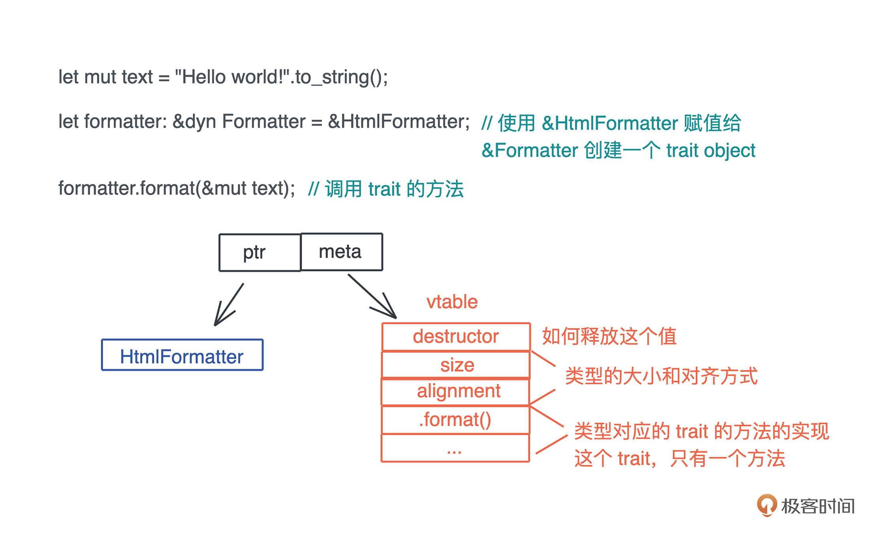
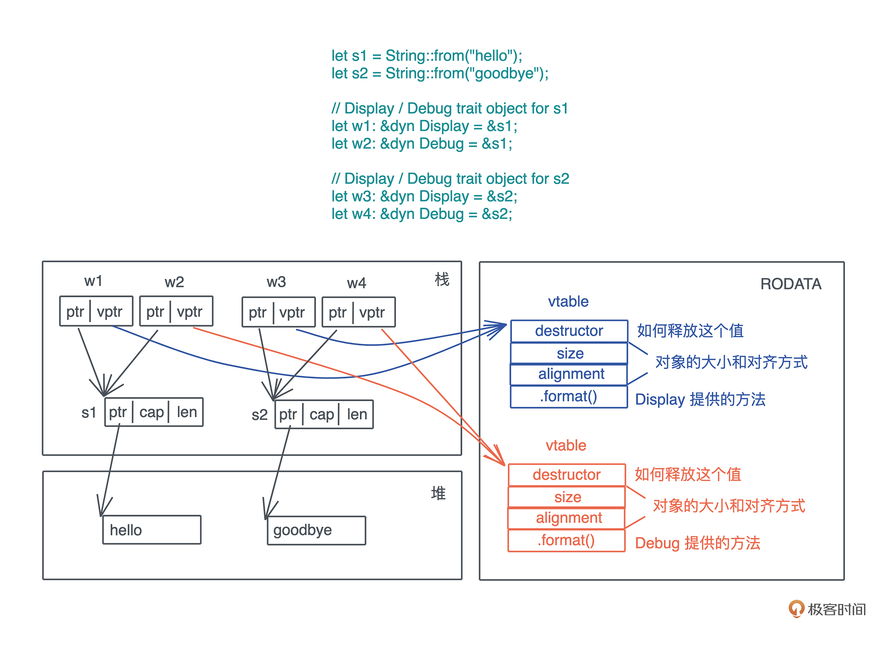

- 00 开篇词 让Rust成为你的下一门主力语言.md.html
- 01 内存：值放堆上还是放栈上，这是一个问题.md.html
- 02 串讲：编程开发中，那些你需要掌握的基本概念.md.html
- 03 初窥门径：从你的第一个Rust程序开始！.md.html
- 04 get hands dirty：来写个实用的CLI小工具.md.html
- 05 get hands dirty：做一个图片服务器有多难？.md.html
- 06 get hands dirty：SQL查询工具怎么一鱼多吃？.md.html
- 07 所有权：值的生杀大权到底在谁手上？.md.html
- 08 所有权：值的借用是如何工作的？.md.html
- 09 所有权：一个值可以有多个所有者么？.md.html
- 10 生命周期：你创建的值究竟能活多久？.md.html
- 11 内存管理：从创建到消亡，值都经历了什么？.md.html
- 12 类型系统：Rust的类型系统有什么特点？.md.html
- 13 类型系统：如何使用trait来定义接口？.md.html
- 14 类型系统：有哪些必须掌握的trait？.md.html
- 15 数据结构：这些浓眉大眼的结构竟然都是智能指针？.md.html
- 16 数据结构：Vec_T_、&[T]、Box_[T]_ ，你真的了解集合容器么？.md.html
- 17 数据结构：软件系统核心部件哈希表，内存如何布局？.md.html
- 18 错误处理：为什么Rust的错误处理与众不同？.md.html
- 19 闭包：FnOnce、FnMut和Fn，为什么有这么多类型？.md.html
- 20 4 Steps ：如何更好地阅读Rust源码？.md.html
- 21 阶段实操（1）：构建一个简单的KV server-基本流程.md.html
- 22 阶段实操（2）：构建一个简单的KV server-基本流程.md.html
- 23 类型系统：如何在实战中使用泛型编程？.md.html
- 24 类型系统：如何在实战中使用trait object？.md.html
- 25 类型系统：如何围绕trait来设计和架构系统？.md.html
- 26 阶段实操（3）：构建一个简单的KV server-高级trait技巧.md.html
- 27 生态系统：有哪些常有的Rust库可以为我所用？.md.html
- 28 网络开发（上）：如何使用Rust处理网络请求？.md.html
- 29 网络开发（下）：如何使用Rust处理网络请求？.md.html
- 30 Unsafe Rust：如何用C++的方式打开Rust？.md.html
- 31 FFI：Rust如何和你的语言架起沟通桥梁？.md.html
- 32 实操项目：使用PyO3开发Python3模块.md.html
- 33 并发处理（上）：从atomics到Channel，Rust都提供了什么工具？.md.html
- 34 并发处理（下）：从atomics到Channel，Rust都提供了什么工具？.md.html
- 35 实操项目：如何实现一个基本的MPSC channel？.md.html
- 36 阶段实操（4）：构建一个简单的KV server-网络处理.md.html
- 37 阶段实操（5）：构建一个简单的KV server-网络安全.md.html
- 38 异步处理：Future是什么？它和async_await是什么关系？.md.html
- 39 异步处理：async_await内部是怎么实现的？.md.html
- 40 异步处理：如何处理异步IO？.md.html
- 41 阶段实操（6）：构建一个简单的KV server-异步处理.md.html
- 42 阶段实操（7）：构建一个简单的KV server-如何做大的重构？.md.html
- 43 生产环境：真实世界下的一个Rust项目包含哪些要素？.md.html
- 44 数据处理：应用程序和数据如何打交道？.md.html
- 45 阶段实操（8）：构建一个简单的KV server-配置_测试_监控_CI_CD.md.html
- 46 软件架构：如何用Rust架构复杂系统？.md.html
- 加餐 Rust2021版次问世了！.md.html
- 加餐 代码即数据：为什么我们需要宏编程能力？.md.html
- 加餐 宏编程（上）：用最“笨”的方式撰写宏.md.html
- 加餐 宏编程（下）：用 syn_quote 优雅地构建宏.md.html
- 加餐 愚昧之巅：你的Rust学习常见问题汇总.md.html
- 加餐 期中测试：参考实现讲解.md.html
- 加餐 期中测试：来写一个简单的grep命令行.md.html
- 加餐 这个专栏你可以怎么学，以及Rust是否值得学？.md.html
- 大咖助场 开悟之坡（上）：Rust的现状、机遇与挑战.md.html
- 大咖助场 开悟之坡（下）：Rust的现状、机遇与挑战.md.html
- 特别策划 学习锦囊（一）：听听课代表们怎么说.md.html
- 特别策划 学习锦囊（三）：听听课代表们怎么说.md.html
- 特别策划 学习锦囊（二）：听听课代表们怎么说.md.html
- 用户故事 绝望之谷：改变从学习开始.md.html
- 用户故事 语言不仅是工具，还是思维方式.md.html
- 结束语 永续之原：Rust学习，如何持续精进？.md.html
- 捐赠
24 类型系统：如何在实战中使用trait object？
你好，我是陈天。
今天我们来看看 trait object 是如何在实战中使用的。
照例先来回顾一下 trait object。当我们在运行时想让某个具体类型，只表现出某个 trait 的行为，可以通过将其赋值给一个 dyn T，无论是 &dyn T，还是 Box
你可以再阅读一下[第 13 讲]的这个图，来回顾 trait object 是怎么回事：- 
在编译 dyn T 时，Rust 会为使用了 trait object 类型的 trait 实现，生成相应的 vtable，放在可执行文件中（一般在 TEXT 或 RODATA 段）：- 
这样，当 trait object 调用 trait 的方法时，它会先从 vptr 中找到对应的 vtable，进而找到对应的方法来执行。
使用 trait object 的好处是，当在某个上下文中需要满足某个 trait 的类型，且这样的类型可能有很多，当前上下文无法确定会得到哪一个类型时，我们可以用 trait object 来统一处理行为。和泛型参数一样，trait object 也是一种延迟绑定，它让决策可以延迟到运行时，从而得到最大的灵活性。
当然，有得必有失。trait object 把决策延迟到运行时，带来的后果是执行效率的打折。在 Rust 里，函数或者方法的执行就是一次跳转指令，而 trait object 方法的执行还多一步，它涉及额外的内存访问，才能得到要跳转的位置再进行跳转，执行的效率要低一些。
此外，如果要把 trait object 作为返回值返回，或者要在线程间传递 trait object，都免不了使用 Box
好，对 trait object 的回顾就到这里，如果你对它还一知半解，请复习 [13 讲]，并且阅读 Rust book 里的：Using Trait Objects that allow for values of different types。接下来我们讲讲实战中 trait object 的主要使用场景。
在函数中使用 trait object
我们可以在函数的参数或者返回值中使用 trait object。
先来看在参数中使用 trait object。下面的代码构建了一个 Executor trait，并对比做静态分发的 impl Executor、做动态分发的 &dyn Executor 和 Box
use std::{error::Error, process::Command};
pub type BoxedError = Box<dyn Error + Send + Sync>;
pub trait Executor {
fn run(&self) -> Result<Option<i32>, BoxedError>;
}
pub struct Shell<'a, 'b> {
cmd: &'a str,
args: &'b [&'a str],
}
impl<'a, 'b> Shell<'a, 'b> {
pub fn new(cmd: &'a str, args: &'b [&'a str]) -> Self {
Self { cmd, args }
}
}
impl<'a, 'b> Executor for Shell<'a, 'b> {
fn run(&self) -> Result<Option<i32>, BoxedError> {
let output = Command::new(self.cmd).args(self.args).output()?;
Ok(output.status.code())
}
}
/// 使用泛型参数
pub fn execute_generics(cmd: &impl Executor) -> Result<Option<i32>, BoxedError> {
cmd.run()
}
/// 使用 trait object: &dyn T
pub fn execute_trait_object(cmd: &dyn Executor) -> Result<Option<i32>, BoxedError> {
cmd.run()
}
/// 使用 trait object: Box<dyn T>
pub fn execute_boxed_trait_object(cmd: Box<dyn Executor>) -> Result<Option<i32>, BoxedError> {
cmd.run()
}
#[cfg(test)]
mod tests {
use super::*;
#[test]
fn shell_shall_work() {
let cmd = Shell::new("ls", &[]);
let result = cmd.run().unwrap();
assert_eq!(result, Some(0));
}
#[test]
fn execute_shall_work() {
let cmd = Shell::new("ls", &[]);
let result = execute_generics(&cmd).unwrap();
assert_eq!(result, Some(0));
let result = execute_trait_object(&cmd).unwrap();
assert_eq!(result, Some(0));
let boxed = Box::new(cmd);
let result = execute_boxed_trait_object(boxed).unwrap();
assert_eq!(result, Some(0));
}
}
其中，impl Executor 使用的是泛型参数的简化版本，而 &dyn Executor 和 Box
这里为了简化代码，我使用了 type 关键字创建了一个BoxedError 类型，是 Box
在参数中使用 trait object 比较简单，再来看一个实战中的例子巩固一下：
pub trait CookieStore: Send + Sync {
fn set_cookies(
&self,
cookie_headers: &mut dyn Iterator<Item = &HeaderValue>,
url: &Url
);
fn cookies(&self, url: &Url) -> Option<HeaderValue>;
}
这是我们之前使用过的 reqwest 库中的一个处理 CookieStore 的 trait。在 set_cookies 方法中使用了 &mut dyn Iterator 这样一个 trait object。
在函数返回值中使用
好，相信你对在参数中如何使用 trait object 已经没有什么问题了，我们再看返回值中使用 trait object，这是 trait object 使用频率比较高的场景。
之前已经出现过很多次了。比如上一讲已经详细介绍的，为何 KV server 里的 Storage trait 不能使用泛型参数来处理返回的 iterator，只能用 Box
pub trait Storage: Send + Sync + 'static {
...
/// 遍历 HashTable，返回 kv pair 的 Iterator
fn get_iter(&self, table: &str) -> Result<Box<dyn Iterator<Item = Kvpair>>, KvError>;
}
再来看一些实战中会遇到的例子。
首先是 async_trait。它是一种特殊的 trait，方法中包含 async fn。目前 Rust 并不支持 trait 中使用 async fn，一个变通的方法是使用 async_trait 宏。
在 get hands dirty 系列中，我们就使用过 async trait。下面是[第 6 讲]SQL查询工具数据源的获取中定义的 Fetch trait：
// Rust 的 async trait 还没有稳定，可以用 async_trait 宏
#[async_trait]
pub trait Fetch {
type Error;
async fn fetch(&self) -> Result<String, Self::Error>;
}
这里宏展开后，类似于：
pub trait Fetch {
type Error;
fn fetch<'a>(&'a self) ->
Result<Pin<Box<dyn Future<Output = String> + Send + 'a>>, Self::Error>;
}
它使用了 trait object 作为返回值。这样，不管 fetch() 的实现，返回什么样的 Future 类型，都可以被 trait object 统一起来，调用者只需要按照正常 Future 的接口使用即可。
我们再看一个 snow 下的 CryptoResolver 的例子：
/// An object that resolves the providers of Noise crypto choices
pub trait CryptoResolver {
/// Provide an implementation of the Random trait or None if none available.
fn resolve_rng(&self) -> Option<Box<dyn Random>>;
/// Provide an implementation of the Dh trait for the given DHChoice or None if unavailable.
fn resolve_dh(&self, choice: &DHChoice) -> Option<Box<dyn Dh>>;
/// Provide an implementation of the Hash trait for the given HashChoice or None if unavailable.
fn resolve_hash(&self, choice: &HashChoice) -> Option<Box<dyn Hash>>;
/// Provide an implementation of the Cipher trait for the given CipherChoice or None if unavailable.
fn resolve_cipher(&self, choice: &CipherChoice) -> Option<Box<dyn Cipher>>;
/// Provide an implementation of the Kem trait for the given KemChoice or None if unavailable
#[cfg(feature = "hfs")]
fn resolve_kem(&self, _choice: &KemChoice) -> Option<Box<dyn Kem>> {
None
}
}
这是一个处理 Noise Protocol 使用何种加密算法的一个 trait。这个 trait 的每个方法，都返回一个 trait object，每个 trait object 都提供加密算法中所需要的不同的能力，比如随机数生成算法（Random）、DH 算法（Dh）、哈希算法（Hash）、对称加密算法（Cipher）和密钥封装算法（Kem）。
所有这些，都有一系列的具体的算法实现，通过 CryptoResolver trait，可以得到当前使用的某个具体算法的 trait object，这样，在处理业务逻辑时，我们不用关心当前究竟使用了什么算法，就能根据这些 trait object 构筑相应的实现，比如下面的 generate_keypair：
pub fn generate_keypair(&self) -> Result<Keypair, Error> {
// 拿到当前的随机数生成算法
let mut rng = self.resolver.resolve_rng().ok_or(InitStage::GetRngImpl)?;
// 拿到当前的 DH 算法
let mut dh = self.resolver.resolve_dh(&self.params.dh).ok_or(InitStage::GetDhImpl)?;
let mut private = vec![0u8; dh.priv_len()];
let mut public = vec![0u8; dh.pub_len()];
// 使用随机数生成器 和 DH 生成密钥对
dh.generate(&mut *rng);
private.copy_from_slice(dh.privkey());
public.copy_from_slice(dh.pubkey());
Ok(Keypair { private, public })
}
说句题外话，如果你想更好地学习 trait 和 trait object 的使用，snow 是一个很好的学习资料。你可以顺着 CryptoResolver 梳理它用到的这几个主要的加密算法相关的 trait，看看别人是怎么定义 trait、如何把各个 trait 关联起来，以及最终如何把 trait 和核心数据结构联系起来的（小提示：Builder 以及 HandshakeState）。
在数据结构中使用 trait object
了解了在函数中是如何使用 trait object 的，接下来我们再看看在数据结构中，如何使用 trait object。
继续以 snow 的代码为例，看 HandshakeState这个用于处理 Noise Protocol 握手协议的数据结构，用到了哪些 trait object（代码）：
pub struct HandshakeState {
pub(crate) rng: Box<dyn Random>,
pub(crate) symmetricstate: SymmetricState,
pub(crate) cipherstates: CipherStates,
pub(crate) s: Toggle<Box<dyn Dh>>,
pub(crate) e: Toggle<Box<dyn Dh>>,
pub(crate) fixed_ephemeral: bool,
pub(crate) rs: Toggle<[u8; MAXDHLEN]>,
pub(crate) re: Toggle<[u8; MAXDHLEN]>,
pub(crate) initiator: bool,
pub(crate) params: NoiseParams,
pub(crate) psks: [Option<[u8; PSKLEN]>; 10],
#[cfg(feature = "hfs")]
pub(crate) kem: Option<Box<dyn Kem>>,
#[cfg(feature = "hfs")]
pub(crate) kem_re: Option<[u8; MAXKEMPUBLEN]>,
pub(crate) my_turn: bool,
pub(crate) message_patterns: MessagePatterns,
pub(crate) pattern_position: usize,
}
你不需要了解 Noise protocol，也能够大概可以明白这里 Random、Dh 以及 Kem 三个 trait object 的作用：它们为握手期间使用的加密协议提供最大的灵活性。
想想看，如果这里不用 trait object，这个数据结构该怎么处理？
可以用泛型参数，也就是说：
pub struct HandshakeState<R, D, K>
where
R: Random,
D: Dh,
K: Kem
{
...
}
这是我们大部分时候处理这样的数据结构的选择。但是，过多的泛型参数会带来两个问题：首先，代码实现过程中，所有涉及的接口都变得非常臃肿，你在使用 HandshakeState
而使用 trait object，我们在牺牲一点性能的前提下，消除了这些泛型参数，实现的代码更干净清爽，且代码只会有一份实现。
在数据结构中使用 trait object 还有一种很典型的场景是，闭包。
因为在 Rust 中，闭包都是以匿名类型的方式出现，我们无法直接在数据结构中使用其类型，只能用泛型参数。而对闭包使用泛型参数后，如果捕获的数据太大，可能造成数据结构本身太大；但有时，我们并不在意一点点性能损失，更愿意让代码处理起来更方便。
比如用于做 RBAC 的库 oso 里的 AttributeGetter，它包含了一个 Fn：
#[derive(Clone)]
pub struct AttributeGetter(
Arc<dyn Fn(&Instance, &mut Host) -> crate::Result<PolarValue> + Send + Sync>,
);
如果你对在 Rust 中如何实现 Python 的 getattr 感兴趣，可以看看 oso 的代码。
再比如做交互式 CLI 的 dialoguer 的 Input，它的 validator 就是一个 FnMut：
pub struct Input<'a, T> {
prompt: String,
default: Option<T>,
show_default: bool,
initial_text: Option<String>,
theme: &'a dyn Theme,
permit_empty: bool,
validator: Option<Box<dyn FnMut(&T) -> Option<String> + 'a>>,
#[cfg(feature = "history")]
history: Option<&'a mut dyn History<T>>,
}
用 trait object 处理 KV server 的 Service 结构
好，到这里用 trait object 做动态分发的几个场景我们就介绍完啦，来写段代码练习一下。
就用之前写的 KV server 的 Service 结构来趁热打铁，我们尝试对它做个处理，使其内部使用 trait object。
其实对于 KV server 而言，使用泛型是更好的选择，因为此处泛型并不会造成太多的复杂性，我们也不希望丢掉哪怕一点点性能。然而，出于学习的目的，我们可以看看如果 store 使用 trait object，代码会变成什么样子。你自己可以先尝试一下，再来看下面的示例（代码）：
use std::{error::Error, sync::Arc};
// 定义类型，让 KV server 里的 trait 可以被编译通过
pub type KvError = Box<dyn Error + Send + Sync>;
pub struct Value(i32);
pub struct Kvpair(i32, i32);
/// 对存储的抽象，我们不关心数据存在哪儿，但需要定义外界如何和存储打交道
pub trait Storage: Send + Sync + 'static {
fn get(&self, table: &str, key: &str) -> Result<Option<Value>, KvError>;
fn set(&self, table: &str, key: String, value: Value) -> Result<Option<Value>, KvError>;
fn contains(&self, table: &str, key: &str) -> Result<bool, KvError>;
fn del(&self, table: &str, key: &str) -> Result<Option<Value>, KvError>;
fn get_all(&self, table: &str) -> Result<Vec<Kvpair>, KvError>;
fn get_iter(&self, table: &str) -> Result<Box<dyn Iterator<Item = Kvpair>>, KvError>;
}
// 使用 trait object，不需要泛型参数，也不需要 ServiceInner 了
pub struct Service {
pub store: Arc<dyn Storage>,
}
// impl 的代码略微简单一些
impl Service {
pub fn new<S: Storage>(store: S) -> Self {
Self {
store: Arc::new(store),
}
}
}
// 实现 trait 时也不需要带着泛型参数
impl Clone for Service {
fn clone(&self) -> Self {
Self {
store: Arc::clone(&self.store),
}
}
}
从这段代码中可以看到，通过牺牲一点性能，我们让代码整体撰写和使用起来方便了不少。
小结
无论是上一讲的泛型参数，还是今天的 trait object，都是 Rust 处理多态的手段。当系统需要使用多态来解决复杂多变的需求，让同一个接口可以展现不同的行为时，我们要决定究竟是编译时的静态分发更好，还是运行时的动态分发更好。
一般情况下，作为 Rust 开发者，我们不介意泛型参数带来的稍微复杂的代码结构，愿意用开发时的额外付出，换取运行时的高效；但有时候，当泛型参数过多，导致代码出现了可读性问题，或者运行效率并不是主要矛盾的时候，我们可以通过使用 trait object 做动态分发，来降低代码的复杂度。
具体看，在有些情况，我们不太容易使用泛型参数，比如希望函数返回某个 trait 的实现，或者数据结构中某些参数在运行时的组合过于复杂，比如上文提到的 HandshakeState，此时，使用 trait object 是更好的选择。
思考题
期中测试中我给出的 rgrep 的代码，如果把 StrategyFn 的接口改成使用 trait object：
/// 定义类型，这样，在使用时可以简化复杂类型的书写
pub type StrategyFn = fn(&Path, &mut dyn BufRead, &Regex, &mut dyn Write) -> Result<(), GrepError>;
你能把实现部分修改，使测试通过么？对比修改前后的代码，你觉得对 rgrep，哪种实现更好？为什么？
今天你完成了Rust学习的第24次打卡。如果你觉得有收获，也欢迎分享给你身边的朋友，邀他一起讨论。我们下节课见。
延伸阅读
我们总说 trait object 性能会差一些，因为需要从 vtable 中额外加载对应的方法的地址，才能跳转执行。那么这个性能差异究竟有多大呢？网上有人说调用 trait object 的方法，性能会比直接调用类型的方法差一个数量级，真的么？
我用 criterion 做了一个简单的测试，测试的 trait 使用的就是我们这一讲使用的 Executor trait。测试代码如下（你可以访问 GitHub repo 中这一讲的代码）：
use advanced_trait_objects::{
execute_boxed_trait_object, execute_generics, execute_trait_object, Shell,
};
use criterion::{black_box, criterion_group, criterion_main, Criterion};
pub fn generics_benchmark(c: &mut Criterion) {
c.bench_function("generics", |b| {
b.iter(|| {
let cmd = Shell::new("ls", &[]);
execute_generics(black_box(&cmd)).unwrap();
})
});
}
pub fn trait_object_benchmark(c: &mut Criterion) {
c.bench_function("trait object", |b| {
b.iter(|| {
let cmd = Shell::new("ls", &[]);
execute_trait_object(black_box(&cmd)).unwrap();
})
});
}
pub fn boxed_object_benchmark(c: &mut Criterion) {
c.bench_function("boxed object", |b| {
b.iter(|| {
let cmd = Box::new(Shell::new("ls", &[]));
execute_boxed_trait_object(black_box(cmd)).unwrap();
})
});
}
criterion_group!(
benches,
generics_benchmark,
trait_object_benchmark,
boxed_object_benchmark
);
criterion_main!(benches);
为了不让实现本身干扰接口调用的速度，我们在 trait 的方法中什么也不做，直接返回：
impl<'a, 'b> Executor for Shell<'a, 'b> {
fn run(&self) -> Result<Option<i32>, BoxedError> {
// let output = Command::new(self.cmd).args(self.args).output()?;
// Ok(output.status.code())
Ok(Some(0))
}
}
测试结果如下：
generics time: [3.0995 ns 3.1549 ns 3.2172 ns]
change: [-96.890% -96.810% -96.732%] (p = 0.00 < 0.05)
Performance has improved.
Found 5 outliers among 100 measurements (5.00%)
4 (4.00%) high mild
1 (1.00%) high severe
trait object time: [4.0348 ns 4.0934 ns 4.1552 ns]
change: [-96.024% -95.893% -95.753%] (p = 0.00 < 0.05)
Performance has improved.
Found 8 outliers among 100 measurements (8.00%)
3 (3.00%) high mild
5 (5.00%) high severe
boxed object time: [65.240 ns 66.473 ns 67.777 ns]
change: [-67.403% -66.462% -65.530%] (p = 0.00 < 0.05)
Performance has improved.
Found 2 outliers among 100 measurements (2.00%)
可以看到，使用泛型做静态分发最快，平均 3.15ns；使用 &dyn Executor 平均速度 4.09ns，要慢 30%；而使用 Box
那么，这个性能差异重要么？
在回答这个问题之前，我们把 run() 方法改回来：
impl<'a, 'b> Executor for Shell<'a, 'b> {
fn run(&self) -> Result<Option<i32>, BoxedError> {
let output = Command::new(self.cmd).args(self.args).output()?;
Ok(output.status.code())
}
}
我们知道 Command 的执行速度比较慢，但是想再看看，对于执行效率低的方法，这个性能差异是否重要。
新的测试结果不出所料：
generics time: [4.6901 ms 4.7267 ms 4.7678 ms]
change: [+145694872% +148496855% +151187366%] (p = 0.00 < 0.05)
Performance has regressed.
Found 7 outliers among 100 measurements (7.00%)
3 (3.00%) high mild
4 (4.00%) high severe
trait object time: [4.7452 ms 4.7912 ms 4.8438 ms]
change: [+109643581% +113478268% +116908330%] (p = 0.00 < 0.05)
Performance has regressed.
Found 7 outliers among 100 measurements (7.00%)
4 (4.00%) high mild
3 (3.00%) high severe
boxed object time: [4.7867 ms 4.8336 ms 4.8874 ms]
change: [+6935303% +7085465% +7238819%] (p = 0.00 < 0.05)
Performance has regressed.
Found 8 outliers among 100 measurements (8.00%)
4 (4.00%) high mild
4 (4.00%) high severe
因为执行一个 Shell 命令的效率实在太低，到毫秒的量级，虽然 generics 依然最快，但使用 &dyn Executor 和 Box
所以，如果是那种执行效率在数百纳秒以内的函数，是否使用 trait object，尤其是 boxed trait object，性能差别会比较明显；但当函数本身的执行需要数微秒到数百微秒时，性能差别就很小了；到了毫秒的量级，性能的差别几乎无关紧要。
总的来说，大部分情况，我们在撰写代码的时候，不必太在意 trait object 的性能问题。如果你实在在意关键路径上 trait object 的性能，那么先尝试看能不能不要做额外的堆内存分配。
© 2019 - 2023 Liangliang Lee. Powered by gin and hexo-theme-book.